Практичні курси · журнал «ДентАрт» 2016 №3
Оптимізація естетики і спрощення прямої реставрації в Концепції натуральних шарів
OPTIMISING AESTHETICS AND FACILITATING CLINICAL APPLICATION OF FREE-HAND BONDING USING THE 'NATURAL LAYERING CONCEPT'
Вступ
Сьогодні композити посідають перше місце серед реставраційних матеріалів, оскільки мають високий естетичний потенціал і досить тривалий термін служби при набагато менших затратах у порівнянні з керамічними матеріалами для еквівалентних реставрацій передніх і бічних зубів [1-4]. Крім того, композитні реставрації дозволяють виконувати мінімально інвазивне препарування або взагалі обходитися без попередньої підготовки зубів, якщо передбачається заміна втрачених або відсутніх тканин.
Таке мислення є частиною нової концепції під назвою «біоестетика», в якій перевага надається нереставраційним або адитивним процедурам, таким як відбілювання, мікроабразія, реконтурування емалі, пряма композитна реставрація, адгезивні мостоподібні конструкції чи імплантати для заміни відсутніх зубів. Ці численні процедури, безумовно, заслуговують на більшу увагу, тому що вони простіші в реалізації і мають велику ефективність і передбачуваність [4-10].
Тривалий час створення ідеальних прямих реставрацій було недосяжною метою через недосконалі оптичні властивості композитів, а також через необхідність виконання ряду клінічних процедур для вдосконалення методу. Спроба імітувати відтінки і техніки пошарового нанесення матеріалу, розроблені для керамічних реставрацій, привели до появи дуже складних в реалізації методик, які могли використовувати лише висококваліфіковані стоматологи-практики. Це на довгі роки обмежило кількість пацієнтів, які могли б скористатися величезною перевагою прямої реставрації.
Використання натурального зуба як моделі та ідентифікація відповідного відтінку дентину і оптичних характеристик емалі (трифакторне вимірювання кольору за системою L* а* b* і коефіцієнта контрастності) було орієнтиром у розробці поліпшених сучасних матеріалів різних відтінків і опаковості для прямої реставрації зубів [11-13]. Концепція натуральних шарів — простий і ефективний метод створення високоестетичних прямих реставрацій. Оскільки ця концепція стала еталоном у сфері композитних реставрацій, метою статті є ознайомлення стоматолога-практика з особливостями цієї нової техніки і пов'язаних з нею клінічних процедур.
Нові показання для прямої реставрації
Крім класичних медичних показань, таких як пломбування порожнин класів III, IV і V, існує безліч інших естетичних і функціональних проблем, які можна усунути за допомогою простих прямих композитних реставрацій; ці показання розглядаються нижче.
1. Постортодонтичні стани
Аплазія бічних різців або непоправна ретенція ікол — поширені проблеми, які часто вирішуються за допомогою ортодонтичного лікування після відповідної діагностики стану зубів і скелета [15, 16]. Однак в результаті такого ортодонтичного підходу можуть виникнути різні анатомічні, функціональні і естетичні проблеми. Інші ортодонтичні стани (тобто невідповідність розміру зуба [TSD]) [17] можуть призвести до стійких діастем або субоптимального положення зуба після відповідного лікування. Зросле занепокоєння наших пацієнтів з приводу естетики змусило нашу команду стоматологів усувати такі дефекти:
- незвичайні розміри коронки;
- незвичайний діаметр кореневого каналу;
- незвичайну форму коронки;
- відмінності в кольорі;
- відхилення у пришийковому контурі.
2. Вроджені естетичні вади
Численні вроджені патології, перераховані нижче, вимагають корекції на відносно ранній стадії, і в цих випадках необхідний саме консервативний метод лікування:
- дисплазія/дисколорити;
- гіпоплазія;
- нестандартна форма або розмір зуба.
3. Набуті та інші естетичні вади
Безліч захворювань, які впливають на баланс усмішки й естетику в цілому, можуть розвиватися в різному віці:
- дисколорити (тобто травмований вітальний/девітальний зуб);
- діастеми;
- абразійні, абфракційні та ерозійні ураження;
- переломи зубів;
- карієс;
- функціональні вади.
Зазначені вище стани є потенційними показаннями для консервативних відновлень, виходячи з попередньої втрати тканин і функціонального стану.
Нова концепція підбору кольору
Логічним результатом розвитку стоматологічних матеріалів для прямих реставрацій стало використання природного зуба як моделі. Також це привело до спрощення концепції використання відтінків і техніки пошарового нанесення композиту, яка була названа Концепцією натуральних шарів. Вона заснована на визначенні справжніх оптичних характеристик емалі та дентину за допомогою колориметричних показників L* a* b* (табл. 1) і вимірах коефіцієнта контрастності (табл. 2) [11-13].
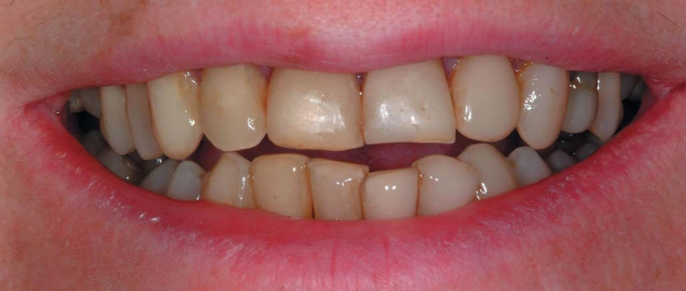
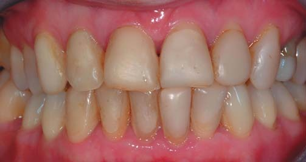
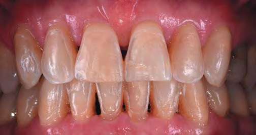
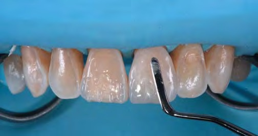
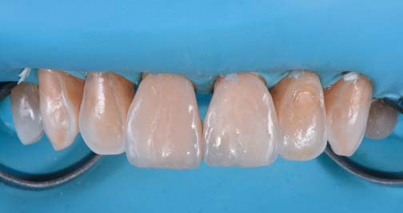
Оптичні характеристики дентину
Різні показники по дентину в колонках а* і b* між його відтінками групи 'A' і 'B' за колірною шкалою VITA не виправдовують використання різних відтінків дентину, у всякому разі, в системі прямої реставрації композитом [13]. Крім того, варіації коефіцієнта контрастності (опаковість — прозорість) в межах однієї групи відтінків свідчать проти використання дентину різної опаковості (тобто напівпрозорий, звичайний або непрозорий дентин). Проте поняття широкої колірної шкали, яка включає всі варіації відтінків натуральних зубних рядів, а також відтінки зубів при таких специфічних станах, як склерозований дентин (коли виявляється руйнування всередині зуба, під пломбою, пошкодження пломби або пришийкові ураження), практично себе виправдало. Таким чином, подальші рекомендації стосуються оптичних характеристик ідеального матеріалу для заміни ушкодженого дентину. Матеріал повинен бути:
- одного відтінку;
- єдиної опаковості;
- мати велику шкалу кольоровості (більше чотирьох груп відтінків системи VITA).
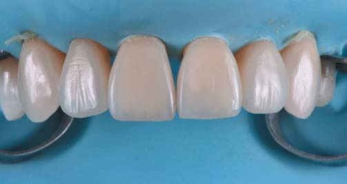
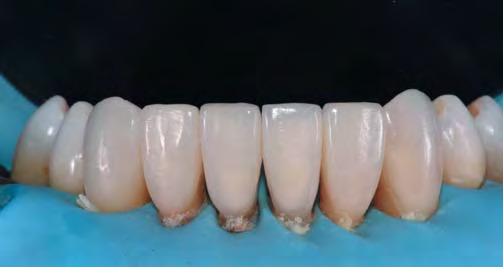
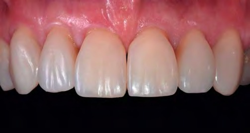
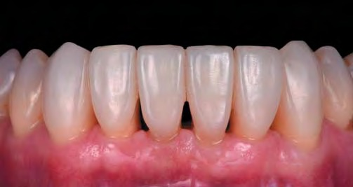
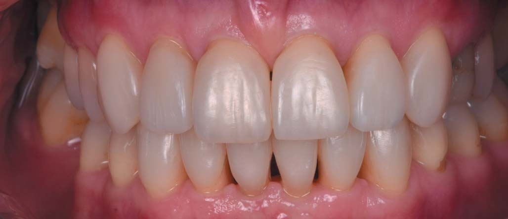
| Vita Shade | L* | a* | b* | CR |
|---|---|---|---|---|
| A1 | 76.11 (3.76) | -3.85 (0.49) | 11.46 (1.56) | 0.67 |
| B1 | 77.12 (3.76) | -3.23 (0.57) | 13.08 (3.21) | 0.63 |
| A2 | 73.88 (2.07) | -3.85 (0.45) | 14.93 (2.90) | 0.66 |
| B2 | 74.06 (3.38) | -3.28 (1.0) | 13.72 (2.81) | 0.62 |
| A3 | 74.05 (1.96) | -3.82 (0.78) | 18.11 (4.06) | 0.67 |
| B3 | 71.52 (3.56) | -3.73 (0.82) | 15.54 (3.71) | 0.62 |
| A3.5 | 67.67 (4.69) | -3.87 (0.46) | 18.71 (3.47) | 0.69 |
| A4 | 68.48 (3.05) | -2.93 (0.92) | 19.82 (3.35) | 0.70 |
| Емаль | L* | a* |
|---|---|---|
| Молоді/білий | 75.89 | 0.485 |
| Дорослі/нейтральний | 66.77 | 0.434 |
| Літні/жовто-сірий | 71.84 | 0.402 |
| Середній показник | 70.83 | 0.435 |
(Склали Дічі і співавт., 2006)
Оптичні характеристики емалі
Що ж до емалі, то яскравість і напівпрозорість тканини варіюють в залежності від віку, що підтверджує клінічну концепцію трьох визначених типів емалі [18]:
- молода емаль: білий відтінок, висока опалесценція, низька прозорість;
- доросла емаль: нейтральний відтінок, менша опалесценція і середня прозорість;
- стара емаль: жовтуватий відтінок, висока прозорість.
Ці відомості лягли в основу нової, вдосконаленої колірної концепції. Відтінки дентину представлені в одному-єдиному кольорі (як усереднений відтінок натурального дентину) з досить широким діапазоном кольоровості (що охоплює, щонайменше, існуючий асортимент відтінків VITA) і мають опаковість, ідентичну натуральному дентину. Кольори емалі повинні бути представлені в різних відтінках і мати різний рівень опаковості, відтворюючи всі варіанти природних відтінків. Основні фірми і матеріали в цій сфері: Miris 2 (Coltene/Whaledent), Ceram-X duo (Dentsply) або Enamel HFO (Micerium).
Концепція натуральних шарів — підбір відтінків
Якість реставрації залежить від правильного вибору відтінків. Згідно з Концепцією натуральних шарів, існує лише два основних етапи:
- вибір насиченості кольору дентину в пришийковій зоні, де емаль найтонша, за допомогою зразків композитного матеріалу;
- вибір відтінку емалі, який зазвичай здійснюється методом простого візуального спостереження.
У певних, досить рідкісних випадках можливий третій етап, при якому використовується візуальне розмічування або фотографічна карта зуба, щоб ідентифікувати особливі оптичні ефекти (наприклад, білі зони гіпокальцинації, зони високої кольоровості або локалізовані зони опалесценції). У таких випадках може бути рекомендоване застосування матеріалів або барвників з особливим ефектом, таких як білий, синій або оранжево-золотий (наприклад, Miris Effects, Coltene/Whaledent).
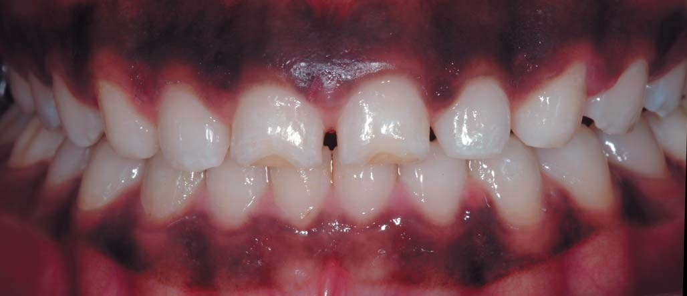
Передопераційний вигляд усіх передніх зубів з гіпоплазією (від ікла до ікла верхній і нижній зубні ряди) у юного пацієнта (14 років).
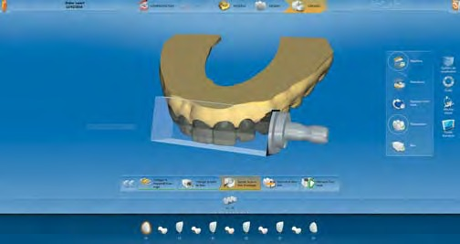
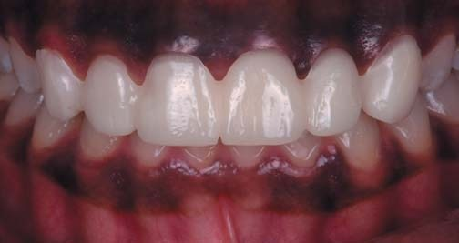
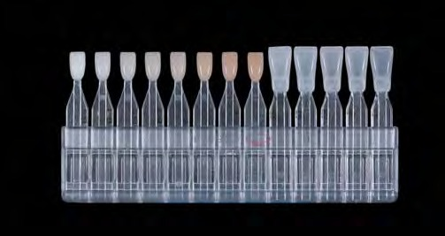
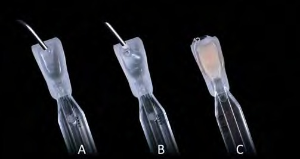
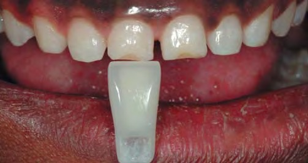
Техніка нашарування і її клінічне застосування
Композити можуть застосовуватися в різних поетапних техніках з естетичною або практичною метою, а також для ефективнішого управління полімеризаційним стресом [19, 20]. Класичний підхід — це відцентрова техніка, застосування якої рекомендується для порожнин класу III, невеликих порожнин класу IV і виправлення певних форм. Техніка передбачає нанесення на дно порожнини одного або двох шарів дентину (у похилому положенні у великих порожнинах класу III) [19] з подальшим нанесенням на всю поверхню емалевого шару.
Існує також інший широко відомий підхід, в основі якого лежить щічно-язична техніка [21]. Вона полягає у використанні силіконового ключа, який виготовляється або з попередньо створеного у вільній техніці мок-апу (у простих випадках), або на моделі після воскового моделювання (у складних випадках). Перший шар, емалевий, поміщають безпосередньо на силіконовий шаблон так, щоб відразу закарбувалися лінгвальний профіль, ширина і положення ріжучого краю майбутньої реставрації. Потім дентин і матеріали для створення ефектів (за необхідності) використовують для створення точної 3-вимірної конфігурації, що створює умови для оптимального естетичного результату, а також натуральну прозорість, опалесценцію та ефект гало.
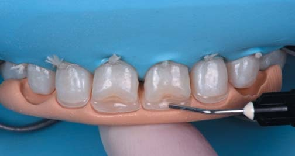
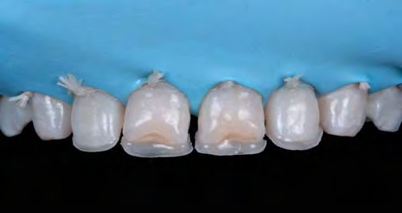


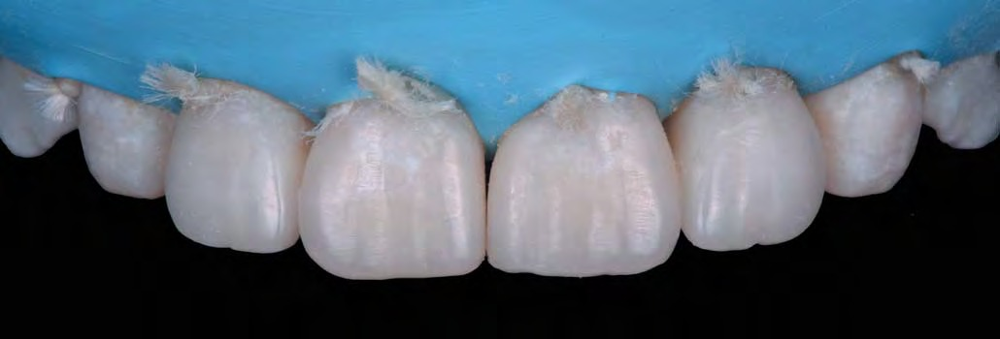
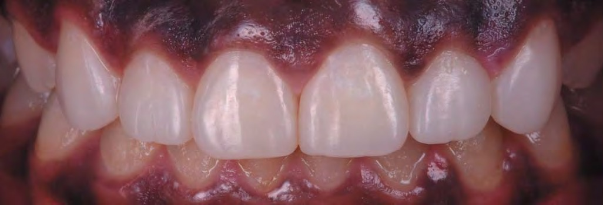
Ефект старіння зуба на дентині і оптичні властивості емалі
Особливу увагу слід звернути на морфологічні зміни, які впливають на структуру ріжучого краю через старіння тканин і функціональне зношування. На додаток до посилення насиченості дентину і прозорості емалі, прогресивне стоншення емалі і оголення дентину по ріжучому краю зумовлює необхідність адаптації техніки пошарового нанесення [20].
Техніка фінішної обробки і полірування реставрації
Створення правильної форми і мікроморфологічних особливостей поверхні зуба є останнім важливим етапом у процесі прямої реставрації передніх зубів. Для швидкого досягнення оптимального і передбачуваного результату всі процедури на цьому етапі необхідно виконувати у суворо визначеній послідовності: проксимальні контури; щічно-лінгвальний профіль; лінії переходів; ріжучий край; мікроморфологія.
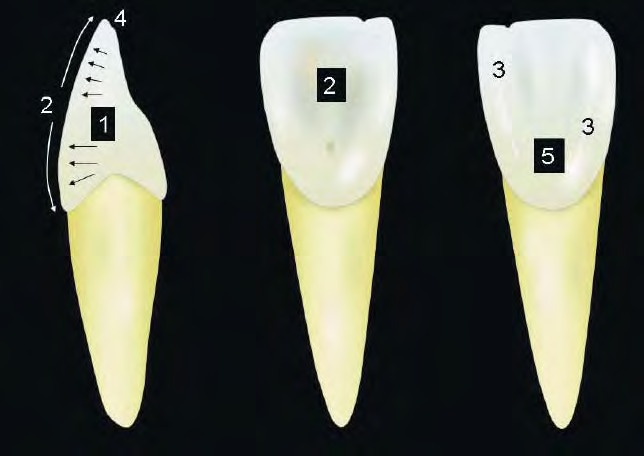
Визначена послідовність полірування забезпечує оптимальний естетичний результат; 1 — проксимальні контури; 2 — щічний і язичний контури; 3 — лінії переходу; 4 — кут ріжучого краю; 5 — щічна мікроморфологія.
Ці морфологічні елементи створюються передусім за допомогою дисків (типу Popon XT, 3M), а дрібні деталі поверхні відтворюються за допомогою борів з алмазним напиленням (переважно полум'яподібної або списоподібної форми, зернистістю 40 мкм), з подальшим застосуванням силіконових шліфувальних передполірувальних форм і, нарешті, форм для остаточного полірування (PoGo, Dentsply) або щітки (Occlusbrush, HaweNeos-Кеrr або Diashine, Coltene/Whaledent). Якщо все зроблено правильно, то якість і деталі поверхні забезпечують природне світловідбиття, що гарантує ідеальний естетичний зовнішній вигляд реставрації.
Довговічність прямих реставрацій композитом
Композити добре зарекомендували себе у прямих реставраціях бічних зубів, що підтверджується документацією щодо їх клінічного обслуговування протягом тривалого часу [2, 3], на відміну від реставрацій сучасними композитами у фронтальній ділянці. Існує дуже мало даних, що підтверджують гарні експлуатаційні дані композитних реставрацій передніх зубів [4]. Це пояснює, чому порцелянові вініри або керамічні реставрації так часто використовують для робіт у цій галузі з надією, що біомеханіка і естетична довговічність цих матеріалів будуть більш задовільними, ніж при прямій реставрації.
І справді, під час аналізу клінічних даних протягом тривалого періоду щодо непрямих вінірів було виявлено високий коефіцієнт їх виживання (понад 90% за десять років) [22-23]. Однак при цьому більш ніж третина цих реставрацій вимагала повторного втручання [22, 24]. Основними причинами цих втручань були тріщини кераміки і крайові дефекти (від крайового дисколориту до рецидивуючого руйнування). Припускається, що ці проблеми виникли під впливом таких чинників, як недостатня адгезія до дентину, наявність об'ємних композитних реставрацій, ендодонтичне лікування зубів і велике функціональне і парафункціональне навантаження. Слід зазначити, що вплив цих факторів цілком може спричинити проблеми і з прямими композитними реставраціями.
Тому можна зробити висновок, що з урахуванням прогнозованого терміну служби і зазначених вище потенційних ризиків при непрямих реставраціях вінірами композит залишається оптимальним матеріалом для реставрацій при невеликих пошкодженнях зубів або для їх естетичного удосконалення, зокрема, коли велика частина вестибулярної поверхні зуба залишається неушкодженою.
Висновки
З плином часу традиційні цілі реставрації не змінилися, просто тепер вони реалізуються у зв'язку з естетичними потребами все більшої кількості пацієнтів. Композити стали матеріалом, який частіше вибирають для молодих або менш привілейованих людей. У будь-якому випадку це ті пацієнти, які вимагають суворо консервативного підходу.
Перед сучасним стоматологом-практиком стоїть завдання замінити відсутні тканини зубів пацієнта і, врешті-решт, змінити їх конфігурацію за допомогою штучного матеріалу, який повинен імітувати природний зовнішній вигляд тканин зуба. Концепція натуральних шарів дозволяє досягати цієї мети передбачуваним способом, використовуючи нові набуті знання про оптичні властивості натуральних тканин у сучасних композитних системах. Цей прогрес можна вважати справжнім проривом у терапевтичній стоматології та величезним внеском у популяризацію прямої реставрації композитом, яка допоможе ще більшій кількості наших пацієнтів отримати більш консервативну, щадну та естетичну реставрацію зубів.
Література
- Osborne J W, Normann R D, Gale E N. A 12-year clinical evaluation of two composite resins. Quintessence Int 1990; 21: 111-114.
- Hickel R, Manhart J. Longevity of restorations in posterior teeth and reasons for failure. J Adhes Dent 2001; 3: 45-64.
- Manhart J, Chen H, Hamm G, Hickel R. Buonocore Memorial Lecture. Review of the clinical survival of direct and indirect restorations in posterior teeth of the permanent dentition. Oper Dent 2004; 29: 481-508.
- Macedo G, Raj V, Ritter A V. Longevity of anterior composite restorations. J Esthet Restor Dent 2006; 18: 310-311.
- Zachrisson B U, Mjor I A. Remodeling of teeth by grinding. Am J Orthod 1975; 68: 545-553.
- Croll T P. Enamel microabrasion: observations after 10 years. J Am Dent Assoc 1997; 128: 45S-50S.
- Heymann H O. Conservative concepts for achieving anterior esthetics. J Calif Dent Assoc 1997; 25: 437-443.
- Leonard R H, Bentley C, Eagle J C, Garland G E et al. Nightguard vital bleaching: a long term study on the efficacy, shade retention, side effects and patient's perceptions. J Esthet Restor Dent 2001; 13: 257-369.
- Ritter A V, Leonard R H, St-George A J, Caplan D J, Haywood V B. Safety and stability of nightguard vital bleaching: 9 to 12 years post-treatment. J Esthet Restor Dent 2002; 14: 275-285.
- Sundfeld R H, Croll T P, Briso A L, de Alexandre R S, Sundfeld Neto D. Considerations about enamel microabrasion after 18 years. Am J Dent 2007; 20: 67-72.
- Cook W D, McAree D C. Optical properties of esthetic restorative materials and natural dentition. J Biomed Mater Res 1985; 19: 469-488.
- Dietschi D, Ardu S, Krejci I. Exploring the layering concepts for anterior teeth. In Roulet J F, Degrange M (eds). Adhesion — the silent revolution in dentistry. Рp 235-251. Berlin: Quintessence Publishing, 2000.
- Dietschi D, Ardu S, Krejci I. A new shading concept based on natural tooth color applied to direct composite restorations. Quintessence Int 2006; 37: 91-102.
- Tuverson D. Orthodontic treatment using canines in place of missing lateral incisors: treatment planning considerations. Am J Orthod 1970; 58: 109-127.
- Nordquist G G, McNeill R W. Orthodontic vs. restorative treatment of the congenitally absent lateral incisor — long term periodontal and occlusal evaluation. J Periodontol 1975; 46: 139-143.
- Dietschi D, Schatz J P. Current restorative modalities for young patients with missing anterior teeth. Quintessence Int 1997; 28: 231-240.
- Freeman J E, Maskeroni A J, Lorton L. Frequency of Bolton tooth-size discrepancies among orthodontic patients. Am J Orthod Dentofacial Orthop 1996; 110: 24-27.
- Ubassy G. Shape and color: the key to successful ceramic restorations. Berlin: Quintessenz Verlags, 1993.
- Dietschi D. Free-hand composite resin restorations: a key to anterior aesthetics. Pract Periodontics Aesthet Dent 1995; 7: 15-25.
- Dietschi D. Layering concepts in anterior composite restorations. J Adhes Dent 2001; 3: 71-80.
- Dietschi D. Free-hand bonding in esthetic treatment of anterior teeth: creating the illusion. J Esthet Dent 1997; 9: 156-164.
- Dumfahrt H, Schaffer H. Porcelain laminate veneers. A retrospective evaluation after 1 to 10 years of service: Part II — Clinical results. Int J Prosthodont 2000; 13: 9-18.
- Layton D, Walton T. An up to 16-year prospective study of 304 porcelain veneers. Int J Prosthodont 2007; 20: 389-396.
- Peumans M, De Munck J, Fieuws S, Lambrechts P et al. A prospective ten-year clinical trial of porcelain veneers. J Adhes Dent 2004; 6: 65-76.